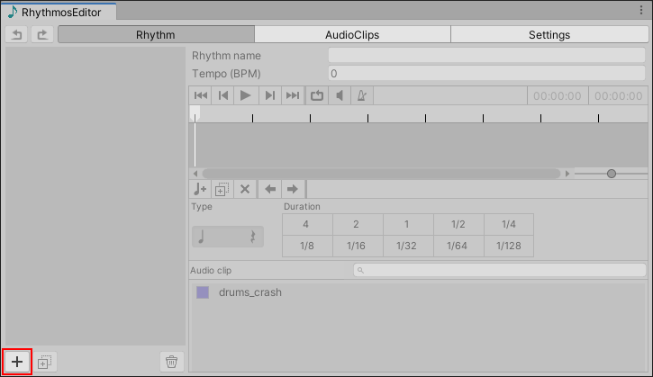
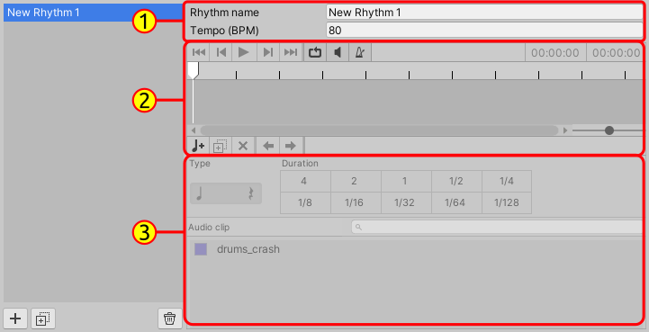
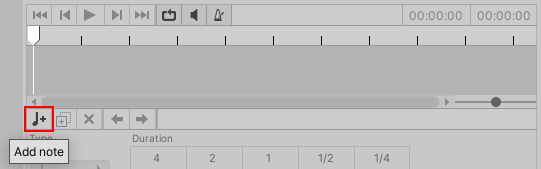
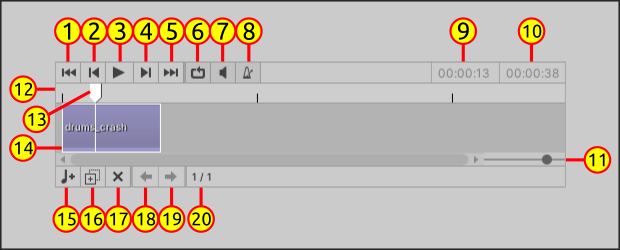
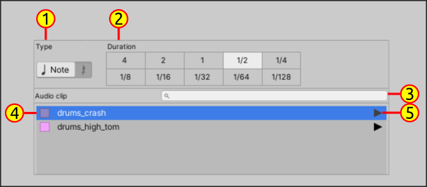

Rhythmos Editor - Creating Rhythms
The main feature of Rhythmos Editor is the rhythm editor in located in the first tab: Rhythms.
On the left there is a scroll view that lists all rhythms that you have created. While in the left there is the rhythm track editor. To create a rhythm follow the below steps:
- Click in the bottom button with plus sign
+

Your new rhythm will be added to list of rhythms. We're ready to compose rhythms! Before that let see how the rhythm creator is organized:

- (1) Rhythm Settings: set name and tempo of rhythm
- (2) Timeline: displays player options, rhythm timeline and note creation options
- (3) Note configuration: When a note is selected you can whether set a note or rest, set the beat value and the
AudioReference.
Initially the options in the Timeline and Note Settings are unavailable because the rhythm is empty. With this overview let's continue in our composition.
- Click on in "quarter note and plus sign" icon in the Timeline to append a new note to the rhythm.

- You will see a new note in the time-line. The general description of the elements of the Timeline:

Playback options:
- (1) Go to start of timeline
- (2) Go previous note
- (3) Play/Stop rhythm playback
- (4) Go to next note
- (5) Go to end of timeline
- (6) Enable/Disable loop
- (7) Mute/Unmute rhythm playback
- (8) Enable/disable metronome playback
- (9) Current playback position. Format:
Minutes:Seconds:Milliseconds. - (10) Rhythm total duration
Timeline
- (11) Zoom slider
- (12) Playhead area
- (13) Current playhead position
- (14) Representation of a note on the timeline
Note edition options
- (15) Add new note
- (16) Duplicate selected note
- (17) Remove selected note
- (18) Move selected note to left
- (19) Move selected note to right
- (20) Current selected no index / total of notes
- When you select a note, you can configure the Note Settings.

- (1) If the selected element is note or rest. When the element is a rest it means an interval of silence in rhythm (no sound).
- (2) Defines the beat value of the selected element - duration of the element
- (3)
AudioClipsearch bar by name - (4)
AudioReferenceitem - (5) Preview AudioClip